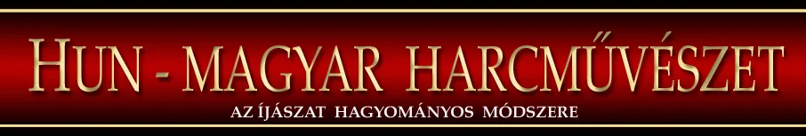
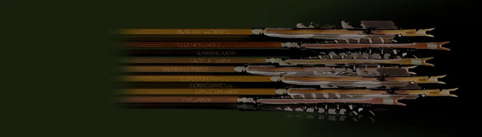

***... ÖSSZEFOGLALÁS
********
Ebben a fejezetrészben a tartalomra vonatkozó, összefoglaló táblázatokat láthatunk. A tárgyak, a tények, a tapasztalat és a következtetés összefüggéseiről, a napjainkban alkalmazott töltéstechnikák paramétereinek összehasonlításáról, az alapvető célzás-technikák és a húrfogás technikák összehasonlításáról.
TÁRGYAK
TÉNYEK
TAPASZTALAT
KÖVETKEZTETÉS
Sajátosságaik és legfőbb jellemzőik alapján elkülönítve ismerteti a szerző a korábban egy kalap alá vett lovasíjász technikákat.
Lovasíjász technikák
A kárpát-medencei sajátosságok szempontjából térben és időben a következő eszközkészletek és módszerek különülnek el:
- Szkíta lovasíjász technika. - (kiegészítve az átmeneti jellegű parthus- szasszanida technikával)
- Hun lovasíjász technika.
- A hun táptalajból előtörő türk lovasíjász technika
- Tatár-mongol népek technikája és a mongol hatásra átalakuló kisebb-nagyobb türk (török) népcsoportok módszerei
Rövid, összehasonlító jellegű összegzés olvasható az íjászat és módszereinek fejlődéséről, fejlesztéséről és alkalmazásáról. Beleértve a legmodernebb módszereket és eszközöket.
... Az íjak teljesítménynövelésének igényét valamint az erőhatás mértékének növelése és az íjász ujjai által elviselhető terhelés közötti ellentét feloldására történő kísérletezést mutatják a korai keleti "számszeríjak" is. Ezek tulajdonképpen igen nagy húzóerejű íjak, vezetősínen elhelyezett mesterséges oldásmechanizmussal (oldószerkezettel) ellátva, amely kiváltja az íjász ujjainak érintkezését az íj húrjával. Ezáltal megszűnik a hagyományos esetben mindenképpen fellépő roncsoló hatás és kezelhetővé alakíthatóak a nagyobb átütőerejű, nagyobb lőtávolságú íjak. Olyanok is, amelyeket már kivételes erőnléttel rendelkező íjász sem lenne képes a hagyományos módon megfeszíteni. A kézi számszeríj technikát - a feszítőszekrényes megoldások kivételével - voltaképpen Európában is ebből a célból fejlesztették ki. ...
*****

{kind=link}
